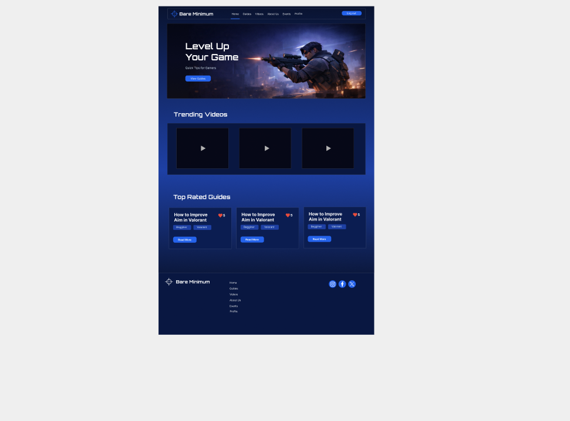
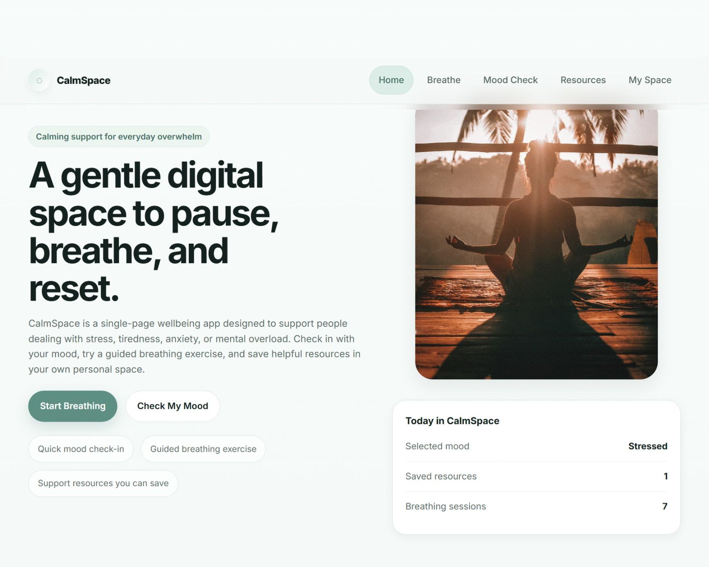
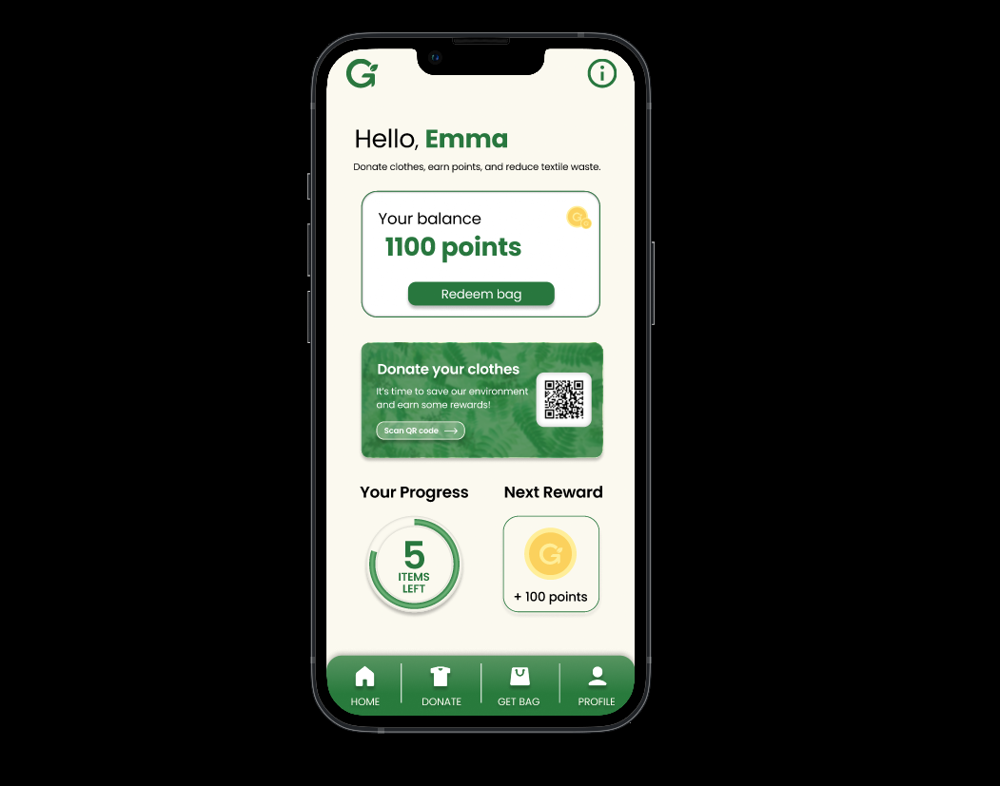

Frontend development
Responsive interfaces and reusable, user-focused components.
HTMLCSSJavaScriptTypeScriptReactNext.js
OPEN TO 2027 GRADUATE & JUNIOR OPPORTUNITIES
I'm Pakize Gurel, a final-year web development student focused on frontend engineering, full-stack applications and intuitive, accessible design.
01 / INTRODUCTION
I'm in my final year at the University of Roehampton, studying web design and development, with graduation expected in 2027.
I enjoy turning complex ideas into useful, approachable products. My academic and independent projects span responsive interfaces, UX prototypes, database-backed applications and developer workflows.
I'm looking for graduate, internship and junior opportunities where I can contribute, keep learning and build software that helps people.
Connect on LinkedIn02 / CAPABILITIES
A practical toolkit for building and improving digital products.
Responsive interfaces and reusable, user-focused components.
Application logic, relational data and collaborative development.
Clear information architecture, thoughtful flows and accessible experiences.
03 / SELECTED WORK
A selection of independent, academic and collaborative work.
A career-readiness web application for students and graduates. Track applications, analyse job descriptions, explore career pathways and structure STAR interview answers.

A collaborative web application developed using Node.js, Express, MySQL and Docker with Agile team practices.

A wellbeing experience combining breathing exercises, mood tracking, reflection and helpful resources.

A multi-page healthy eating website designed to make nutrition information approachable and easy to navigate.

A Figma prototype exploring sustainable donation and recycling rewards through intuitive mobile user flows.
04 / GET IN TOUCH
Open to graduate, junior and internship opportunities in software engineering, frontend development and digital products.
Get in touch ↗